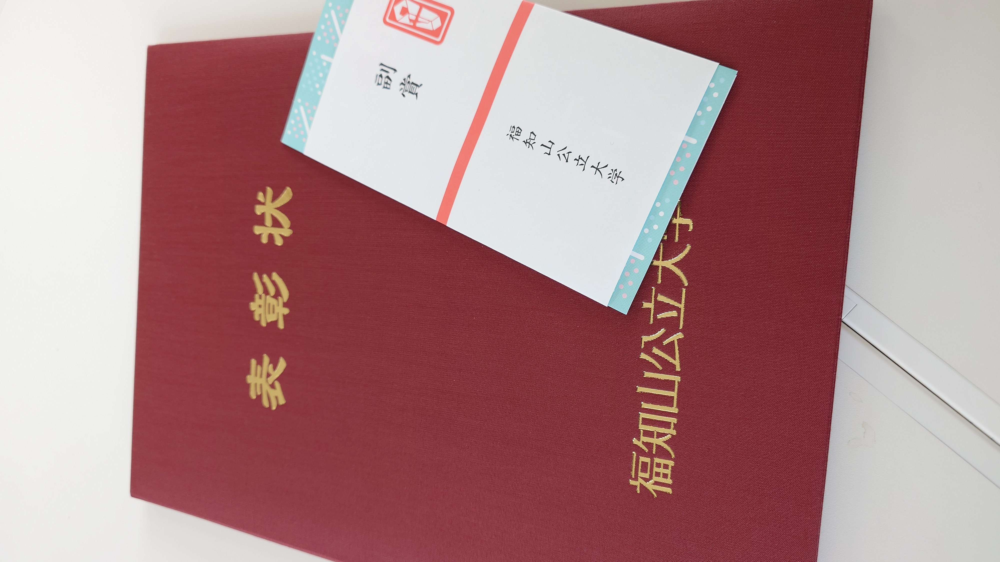
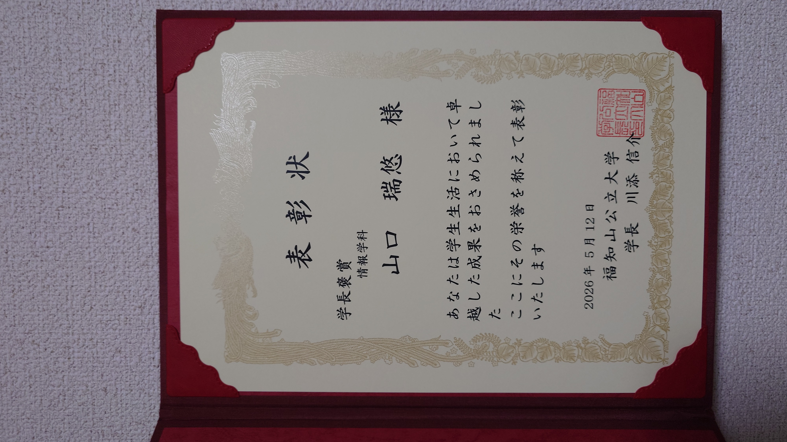

授与年月： 2026年5月
表彰機関： 福知山公立大学
対象活動： エンタテインメントコンピューティング分野における研究活動，および学外での優秀な成果（CatcherXの開発・EC2025優秀賞受賞など）
受賞の概要
福知山公立大学より，2025年度における学術・課外活動の成果を評価され，「学長褒章」を受章いたしました．
HCI（Human-Computer Interaction）に基づく VR捕球シミュレータ「CatcherX」の研究開発や，エンタテインメントコンピューティング2025（EC2025）での一般セッション優秀賞受賞など，学外での積極的な研究発表を通じて大学の発展と名誉に貢献したことが評価の対象となりました．
この受章を励みとして，今後も「技術がいかに人の心を動かすか」を真摯に追求し，より高いレベルの研究成果を社会に発信できるよう取り組んでまいります．
●山口 瑞悠さんの受賞コメント
この度は，名誉ある学長褒章をいただき，大変光栄に存じます．
既存のコンテンツに対する「もっとこうあればいいのに」という飽くなき探求心から始まったこのプロジェクトが，多くの方々の支えにより大きく成長し，このような高い評価をいただけたことを，心より嬉しく，そして誇りに思います．
これからも，私と本システムの挑戦は終わりなく続きます．今後とも温かく見守っていただけますと幸いです．
授与式の様子

学長褒章 授与式

賞状を手に（式典後の記念撮影）